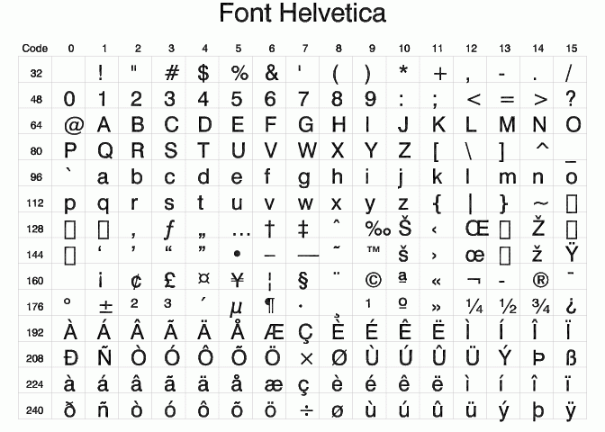
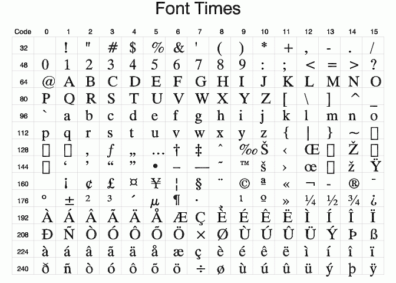
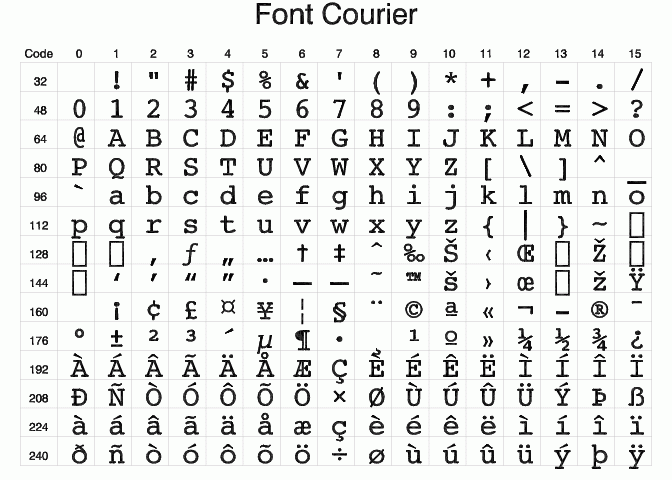
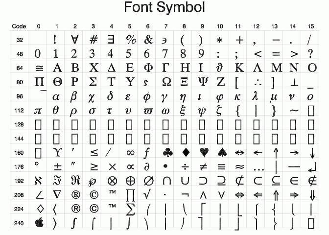
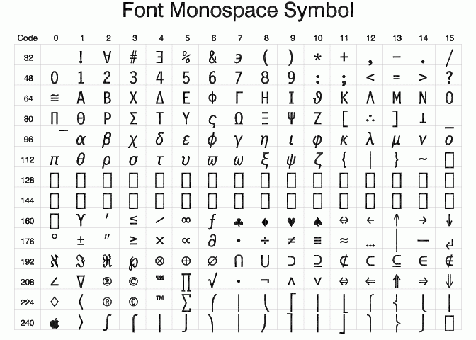

IDL includes the following TrueType fonts:
|
Font Family |
Italic |
Bold |
Bold Italic |
|
Courier |
Courier Italic |
Courier Bold |
Courier Bold Italic |
|
Helvetica |
Helvetica Italic |
Helvetica Bold |
Helvetica Bold Italic |
|
Times |
Times Italic |
Times Bold |
Times Bold Italic |
|
Symbol |
|
|
|
|
Monospace Symbol |
|
|
|
|
DejaVuSans |
|
|
|
To use the TrueType font system with IDL Direct Graphics, either set the value of the IDL system variable !P.FONT equal to 1 (one), or set the FONT keyword to on one of the Direct Graphics routines equal to 1. To use the TrueType font system with IDL Object Graphics, consult " IDLgrFont ." To use the truetype fonts with IDL's Graphics functions, see the TEXT function.
For Direct Graphics, use the SET_FONT and TT_FONT keywords to the DEVICE Procedure routine to select the font to use. For example, to plot using "Helvetica Bold Italic", use the following statements:
DEVICE, SET_FONT='Helvetica Bold Italic', /TT_FONT
PLOT, RANDOMU(seed, 10), CHARSIZE=2, FONT=1, TITLE='My Plot'
For IDL's Graphics functions, use the FONT_NAME and FONT_STYLE keywords to select the font. For example:
p = PLOT(/TEST, FONT_NAME='Times', FONT_STYLE='Bold italic', TITLE='My Plot')
IDL’s default TrueType font is 12 point Helvetica regular.
You can also use Embedded Formatting Commands to position text and change fonts within a single line of text.
To add a your own font to the list of fonts known to IDL, use a text editor to edit the ttfont.map file, adding the FontName , FileName , DirectGraphicsScale , and ObjectGraphicsScale fields for your font.
The TrueType font system relies on a resource file named ttfont.map , located in the resource/fonts/tt subdirectory of the IDL directory. The format of the ttfont.map file is:
FontName FileName DirectGraphicsScale ObjectGraphicsScale
where the fields in each column must be separated by white space (spaces and/or tabs). The fields contain the following information:
You will need to restart IDL for the changes to the ttfont.map file to take effect. On Windows systems, you can use fonts that are not mentioned in the ttfont.map file, as long as they are installed in the Fonts control panel.
The TrueType font files included with IDL are located in the resource/fonts/tt subdirectory of the IDL directory. When attempting to resolve a font name, IDL will look in the ttfont.map file first. If it fails to find the specified font file in the ttfont.map file, it will search for the font file in the following locations:
No further search will be performed. If the specified font is not included in the ttfont.map file, IDL will substitute Helvetica.
If the specified font is not included in the ttfont.map file, IDL will search the list of fonts installed in the system. If the specified font is not found, IDL will substitute Helvetica.
Note:
To get the list, you can use the following command, which returns in the variable
fnames
the names of all available fonts:
DEVICE, GET_FONTNAMES=fnames, SET_FONT='*'
The following figures show roman versions of the TrueType font families included with IDL. The character sets for the bold, italic, and bold italic versions of these fonts are the same as the roman versions.
The SHOWFONT command was used to create these figures. For example, to display the following figure on the screen, you would the command:
SHOWFONT, 'Helvetica', 'Helvetica', /TT_FONT
Note: The ASCII character set for the DejaVuSans font is the same as Helvetica, although the DejaVuSans font includes many more Unicode characters. The SHOWFONT command may be used to view the additional Unicode characters.
Note: To read the character number, add the column index (along the top) to the row index. For example, the capital letter "A" is 65, and the "+" symbol is 43.




